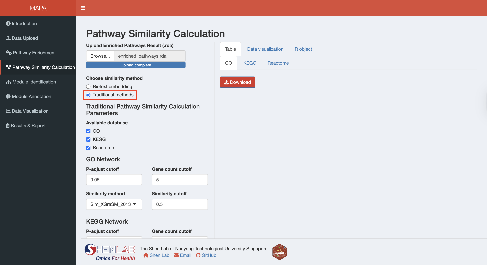
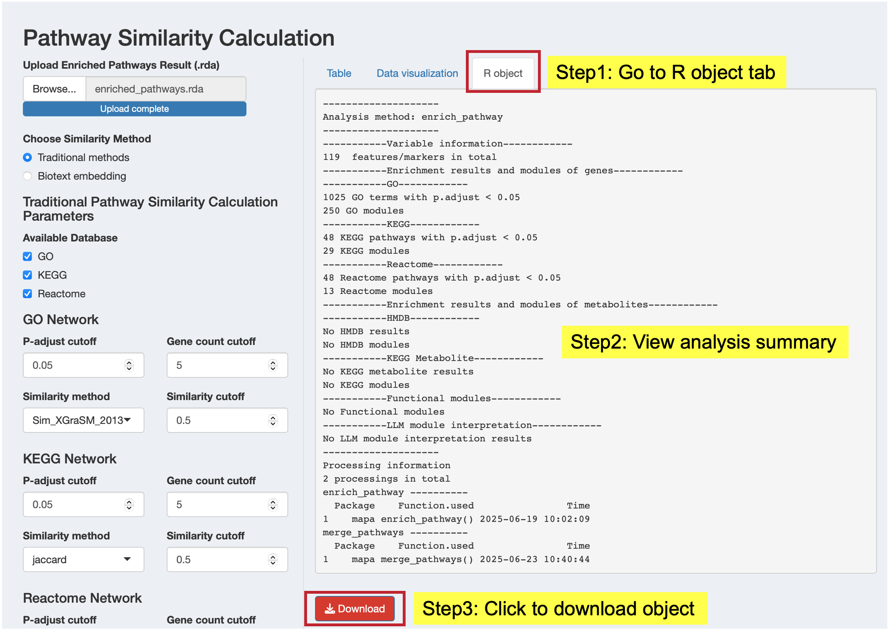

13 Pathway Similarity Calculation
This chapter covers how to calculate pathway similarity using the MAPA Shiny application. The Shiny app computes pathway similarity using two powerful methods: traditional similarity and biotext embedding similarity. Both methods prepare your data for downstream clustering analysis, allowing you to choose the approach that best fits your research needs and computational resources.
Prerequisites: Before calculating pathway similarity, ensure you have either:
- Completed pathway enrichment analysis in the current session using the Pathway Enrichment section as described in the previous chapter, OR
- Upload existing enrichment results using the file upload option at the top of the interface
The processed enrichment data is required for similarity calculation to proceed.
13.1 Step 1: Load Your Data
Option 1: Continue from Previous Step
If you have completed pathway enrichment analysis in the current session, your data will automatically be available for similarity calculation. The interface will detect your data type (gene or metabolite) and display appropriate parameter options.
Option 2: Upload Existing Results
If you have previously saved enrichment results, you can upload them:
- Click “Browse” at the top of the left panel “Upload Enriched Pathways Result (.rda)” to upload your enrichment results file (.rda format)
- Select your file
- Wait for validation - the app will automatically detect: data type (gene or metabolite), available databases from your enrichment analysis, organism information (required for downstream analysis)
13.2 Step 2: Select Method
Once your data is loaded, choose your similarity calculation method using the radio buttons:
- Traditional methods: Uses established similarity measures (semantic similarity for GO, overlap-based similarity for all supported databases, see Section 12.1)
- Biotext embedding: Uses large language model (LLM) text embeddings to capture semantic relationships
13.2.1 Method 1: Traditional Methods
When you select “Traditional methods”, the interface displays database-specific parameter panels based on your enrichment analysis results. The app automatically detects which databases are available from your enrichment analysis. The traditional similarity method requires four main parameters for each database. While the parameter names vary slightly between data types, they serve the same fundamental purposes:
| Parameter | Purpose | Default | Gene Databases | Metabolite Databases |
|---|---|---|---|---|
| P-adjust cutoff | Significance threshold for pathway inclusion | 0.05 | GO, KEGG, Reactome | SMPDB, KEGG |
| Count cutoff | Minimum genes/metabolites per pathway | 5 | GO, KEGG, Reactome | SMPDB, KEGG |
| Similarity method | Algorithm for calculating pathway similarity | See below | GO, KEGG, Reactome | SMPDB, KEGG |
| Similarity cutoff | Threshold for intra-database pathway clustering | 0.5 | GO, KEGG, Reactome | SMPDB, KEGG |
Similarity Method Options:
- Only GO terms: Semantic similarity using the simona package
- GO/KEGG/Reactome/SMPDB pathways: Gene/metabolite overlap similarity (Jaccard, Dice, Overlap, and Kappa)

Parameter Selection Guide:
- Lower p-adjust cutoff (e.g., 0.01) = More stringent, fewer pathways
- Higher count cutoff (e.g., 10) = Focus on larger, more established pathways
- Similarity cutoff = Balance between intra-database module granularity (lower values) and specificity (higher values)
13.2.2 Method 2: Biotext Embedding
When you select “Biotext embedding”, the interface displays parameters for LLM-based similarity calculation.
13.2.2.1 API Configuration
Set up your API connection:
- API provider: Choose between OpenAI or Gemini or SiliconFlow
- Embedding model: Specify the text embedding model (e.g., “text-embedding-3-small”)
- API key: Enter your API key for the selected provider
Note: Third-party API keys, other than SiliconFLow, are not currently supported.
API Key Setup:
- For OpenAI: Obtain your API key from OpenAI Platform
- For Gemini: Get your API key from Google AI Studio
- For SilisonFlow: Get your API key from SiliconFlow Website
Note: Store your API key securely and never commit it to version control!
If you are a server MAPA user, please note:
When running the biotext embedding step in this chapter or the module annotation step in Chapter 15, only models and API keys provided by SiliconFlow are supported.
This restriction exists because the server is set up in China Mainland. To ensure a stable connection to SiliconFlow:
- Users in China Mainland: Use an API key from the Chinese portal — https://siliconflow.cn
- International users: Use an API key from the global portal — https://www.siliconflow.com
13.2.2.2 Database Selection and Filtering
Configure which databases to include and set filtering parameters:
| Parameter | Purpose | Default | Gene Analysis | Metabolite Analysis |
|---|---|---|---|---|
| Available Database | Select databases for embedding analysis | Auto-detected | GO, KEGG, Reactome | SMPDB, KEGG |
| P-adjust cutoff | Significance threshold for pathway inclusion | 0.05 | All selected databases | All selected databases |
| Count cutoff | Minimum genes/metabolites per pathway | 5 | All selected databases | All selected databases |
Database Availability: The databases available for selection depend on your organism and the results from your enrichment analysis. Only databases with significant results will be available for embedding analysis.
13.3 Step 3: Run the Analysis
- Verify your data is loaded - either from the current session or uploaded file
- Select your similarity method - Traditional or Biotext embedding
- Review all parameter selections to ensure they match your analysis goals
- Click the “Submit” button to start the similarity calculation
- Monitor progress - a progress indicator will show the analysis is running
- Wait for completion - processing time varies by method:
- Traditional methods: Usually complete within minutes
- Biotext embedding: May take longer due to API calls and text processing
13.4 Step 4: Review Results
After successful completion, results will appear in the right panel with different content based on your selected method:
Table Tab: View database-specific module results
- Browse enriched pathway intra-database modules generated based on pathway similarity
- Examine module composition
- Download individual database results as CSV files
Key result columns in the module tables:
- module: Intra-database module identifier (e.g., “go_Module_2”, “kegg_Module_15”)
- module_annotation: Representative pathway name for the module (pathway with lowest p-adjust for ORA or highest |NES| for GSEA)
- Description: Names of all pathways in the module (separated by
;) - module_content: All pathway/term IDs grouped in this module
- Count: Number of genes/metabolites from input list in the module
- p_adjust: Best (lowest) adjusted p-value among pathways in the module
Data Visualization Tab: Generate similarity network plots
- Click “Generate plot” to create network visualizations for modules from each database
- Customize plot parameters (degree cutoff, text display options)
R Object Tab: Access the complete results object
- View a summary of the analysis results
- Download the complete functional module object (.rda format) for further analysis in R

For biotext embedding results, you’ll see a simplified results panel to download the results (.rda format) which include a similarity matrix and your enrichment analysis result for use in downstream clustering analysis.
Embedding Results: The similarity matrix from biotext embedding is typically large and computationally intensive to display. Instead of showing the full matrix in the interface, you can download it for use in subsequent analysis steps or external tools.
13.5 Step 5: View Analysis Code
Click the “Code” button to see the exact R code that replicates your analysis. This feature provides:
- Reproducibility: Copy and paste code into R scripts
- Learning: Understand the underlying MAPA functions and parameters
- Customization: Modify parameters for batch processing or additional analyses
13.6 Method Comparison
| Aspect | Traditional Methods | Biotext Embedding |
|---|---|---|
| Speed | Fast, deterministic | Slower, requires API calls |
| Cost | Free | API usage costs |
| Reproducibility | Fully reproducible | Highly reproducible (minor API variations) |
| Novel discoveries | Based on known annotations | Can identify functional relationships beyond overlap |
| Internet dependency | Minimal (for database updates) | Required for API access |
| Cross-database integration | Limited by annotation overlap | Excellent semantic integration |
13.7 Next Steps
Once your similarity calculation is complete:
Review and Download Results: Examine the similarity patterns and download results for further analysis and as backup copies so that you can restart from this point if needed.
Proceed to Clustering: Click the “Next” button to move to the Pathway Clustering section
The similarity results will automatically be available for the next step in your MAPA analysis workflow in this current session, where you’ll group related pathways into functional modules.